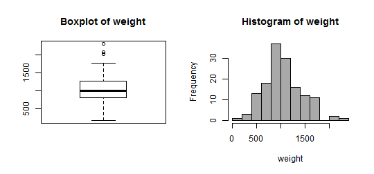

Profesores: Carlos Pérez González Marcos Colebrook Santamaría (curso de Fundación General ULL)
2014
Bienvenidos a R
Agenda
Introducción al entorno R: instalación y uso básico. Librerías.
Conceptos básicos del lenguaje R: instrucciones sencillas, scripts y funciones sencillas.
Gráficos en R: el comando plot() y librerías específicas.
Introducción a la interfaz Rstudio.
Librería RCommander y técnicas de análisis estadístico.
Introducción al entorno R: instalación y uso básico. Librerías.
¿Qué es R (y qué es lo que no es)? (I)
R es un entorno de libre acceso para computación estadística y gráficos así como para programación. Tiene una serie de características que lo hacen bastante asequible cuando empezamos a trabajar por primera vez con él.
Utiliza un lenguaje muy bien desarrollado pero simple.
Su funcionalidad es la de un intérprete de comandos (se ejecutan las instrucciones a medida que las introducimos) y la de un lenguaje de programación (se puede realizar un script o conjunto de instrucciones a modo de programa).
La instalación por primera vez proporciona un entorno básico de R casi sin ninguna dificultad.
Permite un rápido desarrollo de nuevas herramientas para resolver problemas.
Estos desarrollos se distribuyen en forma de librerías que cualquier usuario puede descargar e instalar para personalizar su propio entorno de R.
R no es un lenguaje de programación que permita realizar aplicaciones ejecutables. Sin embargo, se pueden programar interfaces gráficas para facilitar el uso de los programas a los usuarios pero es preciso que estos tengan instalado R.
¿Qué es R (y qué es lo que no es)? (y II)
¿En qué me puede ayudar?
Tenemos miedo a utilizar esto y luego venga otra cosa que lo sustituya....
Sin embargo, si lo pensamos tranquilamente, muchas de las cosas que necesitamos hacer habitualmente (gráficas, problemas de estadística, etc..) no necesitan de un software complicado (SPSS, SAS, etc..).
Podemos utilizar R para resolver de forma más o menos fácil (depende de lo que hayamos entendido en clase de estadística) muchos de estos problemas. A medida que uno desarrolle trabajos de más dificultad (trabajos, proyectos fin de grado o máster, investigación, etc..) R nos será de mayor utilidad.
¿Por donde empezamos? R Base y librerías o paquetes. Rstudio
En principio, se comienza descargando el paquete básico de R (Base R)
Ir a www.r-project.org(http://www.r-project.org) y descarga la versión de RStudio para tu OS.
El paquete base viene con un conjunto de herramientas básicas de gestión de datos, análisis y funciones gráficas.
A medida que uno necesita más herramientas, se pueden descargar e instalar entre las +4000 librerías que hay en CRAN las que puedan sernos de ayuda.
Una librería que utilizaremos en este curso es Rcmdr (RCommander). La instalaremos desde el terminal de comandos de R.
R se puede utilizar básicamente con lo que tenemos en la instalación base (terminal de comandos) pero podemos instalar, de forma adicional, algún otro entorno gráfico que facilite su uso (Rstudio).
Ir a www.rstudio.org(http://www.rstudio.org) y descarga la versión de RStudio para tu OS.
Ya tengo esto instalado....
Empezaremos adquiriendo conocimientos básicos de R.
Se trata de iniciarse en el manejo de R (comienza como exploreR para llegar a ser un useR). Hay excelentes tutoriales en internet para mejorar aprendizaje.
Por ejemplo, codeschool tiene este tutorial online R para ensayar con R solo con el navegador, sin necesidad de instalar nada.
Conceptos básicos del lenguaje R: instrucciones sencillas, scripts y funciones sencillas.
La consola de R. Operaciones elementales
El código R puede ser introducido directamente en la consola de comandos o mediante un script. Por ejemplo, se pueden realizar operaciones aritméticas elementales
# operaciones básicas7 +37 *37/37%%37/0
Observar que los comandos están separados con un salto de línea (o también con ;). Sin embargo, si el comando comienza con el caracter # esa línea no se ejecuta (p.e., apropiado para añadir comentarios explicativo)
Todo en R (variables, vectores, funciones, gráficos, fórmulas, ...) son objetos.
El objeto más elemental es una variable. Para crear una variable (x) debemos asignar un valor (número, palabra, ...) mediante <- or = . Se recomienda <- .
x <-3
Tengamos en cuenta que R es sensible a mayúsculas: x es diferente de X
Una reasignación sobreescribe el contenido de la variable
x <- "ahora x es una cadena."
x
x <-c(3, 4, 5, 6, 7, 8) # c() combina valores en un vector.
x
Acceder a elementos de un vector x con x[n]
x
x[3:6] # elementos 3,4,5,6
x[c(1, 3, 6)] # elts 1,3 y 6
x[-c(1, 3, 6)] # todos elts excepto 1,3 y 6
Ejercicio 1
crear un vector x con valores 0, 3, 6, 9, 12, 15, 18
crear un vector y con las palabras {"mis","números","favoritos","son"}
crear un vector z con todos los elementos de y los 2 últimos elementos de x
ejecutar typeof(x), typeof(y) y typeof(z)
crear un vector w con valores el logaritmo de cada elemento de x
Vectores
Veamos algunos ejemplos con vectores
x <-c(1:3)
x +1#suma 1 a cada elemento del vector
x/2#divide por 2 cada elemento del vectorlength(x) # número de elementos del vectormax(x)
min(x)
sum(x) #suma todos los elementos del vectorlog(x) #aplica la función log() a cada elemento del vector
Observar que estamos utilizando las primeras funciones de R (length, max, min, ...). Si se desea obtener la ayuda en particular de una función debemos escribir ? seguido del nombre de la función
`?`(sum)
Ahora, veamos como son las operaciones entre vectores
x <-c(1:3)
y <-4:6# también se pueden generar secuencias numéricas sin usar c()
x +y
x <-1:4
x +y # R da un warning si se suman de diferente longitud
x <-1:3
y <-4:6
x *y # producto elemento a elemento
A las columnas podemos acceder utilizando su nombre
datos[, "var2"]
aunque la más habitual es con el operador $:
datos$var2 # la columna var2 (como vector de valores)
datos$var2[1:3] # los 3 primeros elementos de var2
Podemos hacer operaciones vectoriales con las variables de un data.frame
x <-datos$var2 +datos$values
datos$var3 <-datos$var2 +datos$values
Filtrar conjuntos de registros en un data.frame
Supongamos que queremos filtrar aquellas filas del dataset 'datos' que verifican una condición determinada (p.e., las filas tales que var1 sea igual a 2 y las filas con var2 igual a 2).
Filtro por una variable: Filtrar las 'mascotas' de tipo 'gato'. ¿Cuántos animales hay?
Suma agrupada: Hallar la suma de todos los pesos de cada animal (animal='perro', animal='gato',animal='mono'). ¿Cuál es el máximo de las sumas agrupadas por animal?
Media de una variable por grupos: Hallar el peso medio de cada animal.
Librería RCommander y técnicas de análisis estadístico.
¿Qué es RCommander?
Es una interfaz gráfica de usuario (GUI)
Facilita el manejo de R y permite generar instrucciones de R
Incluye la posibilidad de realizar distintos tipos de análisis (análisis exploratorio, distribuciones de probabilidad, inferencia paramétrica y no paramétrica, análisis de la varianza de uno o varios factores,....)
Es una librería que no está incluida en la instalación base de R
install.packages("Rcmdr")
Una vez instalada, sólo hace falta iniciarla en cada nueva sessión de R de la siguiente forma
library(Rcmdr) # tarda un poco puesto que conviene instalar las librerías adicionales que solicita
Si se cierra R-Commander (Rcmdr) pero no la sesión de R, se vuelve a cargar
Commander()
Aspecto de la interfaz de R Commander
La interfaz de R commander tiene varias partes principales
En la parte superior se presentan una serie de opciones de menú (Fichero, Editar, ...)
A continuación, hay dos ventanas principales:
R Script, donde aparecen todas las instrucciones que se generarán cuando seleccionemos opciones del menú superior.
Salida, donde se presenta en formato texto el resultado de la ejecución de las diferentes opciones del menú
Directorio de trabajo, scripts, resultados y workspace de R
El menú 'Fichero' sirve para gestionar las instrucciones a ejecutar, los objetos creados en R, los resultados generados, etc... pero NO permite cargar conjuntos de datos para el análisis.
El directorio de trabajo representa el directorio local donde queremos trabajar (donde estan los archivos a cargar, donde queremos guardar los scripts, ...)
Las instrucciones de la ventan R Script (cargarlas o guardarlas)
Los resultados de la ventana Salida (guardar)
El entorno de trabajo (workspace) con todas las variables que tenemos creadas
En principio, las opciones más importantes de este menú sería 'Cambiar directorio de trabajo' (al comenzar a utilizar Rcmdr) y 'Guardar las instrucciones' (al finalizar nuestra sesión de Rcmdr).
En cualquier caso, al cerrar Rcmdr también nos preguntará si queremos guardar el script y el espacio de trabajo.
Distribuciones de probabilidad
El menú Distribuciones de probabilidad dispone de diversas funciones para estudiar diferentes tipos de distribuciones. En particular
Se pueden obtener los cuantiles teóricos para una distribución (por ejemplo, para hallar cual es el valor crítico zα / 2 de una normal)
Se pueden obtener las probabilidades Pr(Z < z)
Representar las funciones de densidad y de probabilidad
Generar una muestra simulada para una distribución determinada
Importar conjuntos de datos
El menú Datos nos permite importar conjuntos de datos desde varios formatos (txt, SPSS, Excel, ...). Vamos a cargar el conjunto de datos 'ddt.txt':
group: Grupo de observaciones (mediciones en dos temporadas)
location: Código del lugar de captura (de 1 a 3)
location_name: Nombre del lugar (afluente, medio, desembocadura)
species: Código de especie (de 1 a 2)
species_name: Nombre de la especie del pez (buffalo, catfish)
length: Longitud del pez(en cm.)
weight: Peso pez (en grs.)
DDT_conc: Concentración de DDT (% de peso) medida
La opción 'Conjunto de datos activo' permite:
Filtrar observaciones (filas) del conjunto de datos
Ver nombres de las variables (columnas) del conjunto de datos
Guardar el conjunto de datos (en formato R) o exportar a formato texto plano
La opción 'Modificar variables del conjunto de datos activo' permite:
Renombrar las variables
Calcular nuevas variables
Tipificar o estandarizar las variables
Reordenar niveles de un factor
Análisis estadísticos
El menú Estadísticos nos permite realizar diversos análisis estadísticos.
En la opción 'Resúmenes' podemos:
Obtener resúmenes estadísticos de las variables conjunto de datos. Estos resúmenes se pueden hacer por grupos de una variable factor.
Hallar correlaciones entre variables (Pearson, Spearman, parcial).
Realizar test de correlaciones significativas y de normalidad de las variables.
La opción 'Gráficas' nos permite complementar los análisis mediante
Gráficos histograma para estudiar la distribución de los datos
Diagramas de caja para analizar la varianza de las variables
Tablas de contingencia y tests de proporciones
En la opción 'Tablas de contingencia' podemos generar tablas de contingencia (de doble o múltiple entrada) para analizar relaciones entre dos o más variables factor.
REQUISITOS: Es preciso tener, al menos, 2 variables factor para generar este tipo de tablas.
A partir de las tablas de doble entrada se pueden realizar tests de independencia de la chi-cuadrado
En la opción 'Proporciones' podemos realizar pruebas sobre la proporción de éxitos (o de un grupo determinado) en una población
REQUISITOS: Es preciso tener 1 variable factor con 2 niveles para realizar este test.
Ejercicio 5
Realizar un resumen descriptivo de 'DDT_conc' para cada uno de los 2 grupos de observaciones.
Realizar un test para comparar si la proporción de observaciones en el grupo 1 es igual a la del grupo 2
Realizar una tabla de contingencia para comparar los 2 grupos de observaciones con las 2 especies de peces.
PISTA: La variable 'group' ha sido cargada en R como variable numérica y debería ser un factor.
Tests de medias y de varianzas
En la opción 'Medias' podemos realizar pruebas sobre la media estadística de una o más poblaciones.
El test “Test t para una muestra” corresponde a la prueba clásica sobre la media de una población cuando la varianza es desconocida.
Los “Test t para muestras independientes” y “Test t para datos relacionados” permiten comparar, dadas dos muestras (o dos grupos), las medias de sus respectivas poblaciones.
REQUISITOS: Para realizar el test de muestras independientes, Rcmdr necesita una variable factor con dos niveles para diferenciar cada muestra.
Los tests "ANOVA" nos permiten comparar medias para un mayor número de niveles o grupos (2 ó más).
En la opción 'Varianzas' se puede analizar la varianza estadística de una o más poblaciones
El test F-ratio contrasta, dadas dos muestras, el cociente de varianzas de sus respectivas poblaciones.
REQUISITOS: De nuevo, en Rcmdr es preciso una variable factor con dos niveles para diferenciar cada muestra.
Otros tests que permiten comparar la igualdad de varianzas entre mayor número de niveles son el test de Bartlett y el de Levene.
Ejercicio 6
Comparar el peso de los peces del grupo 1 con el peso de los del grupo 2.
1º PASO:
¿Se asume normalidad de la variable peso?

shapiro.test(ddt$weight)
##
## Shapiro-Wilk normality test
##
## data: ddt$weight
## W = 0.9727, p-value = 0.009211
Si hay dudas en la normalidad, el t-test no se puede aplicar (¿¿??)
2º PASO:
¿Se asume igualdad de varianzas de peso entre los grupos?
bartlett.test(weight ~group, data = ddt)
##
## Bartlett test of homogeneity of variances
##
## data: weight by group
## Bartlett's K-squared = 0.0095, df = 1, p-value = 0.9225
Si las varianzas entre grupos son iguales, se debe especificar en opciones del t-test (aprox. Welch).
Tests no paramétricos
En la opción 'Tests no paramétricos' se pueden realizar distintas pruebas de estadísticas cuando no se verifican ciertas hipótesis.
El “test de Wilcoxon” es equivalente al t-test para muestras independientes cuando no se puede asumir normalidad en los datos.
El “test de Kruskal-Wallis” y el “test de Friedman” son tests basados en el rango muestral de las observaciones (equivalentes al ANOVA cuando no se puede asumir normalidad).
EJEMPLO: Comparar 'DDT_conc' de los peces del grupo 1 con los del grupo 2.
Modelos estadísticos: ANOVA
La opción 'Medias' permite realizar el análisis de varianza de uno o varios factores para comparar las medias de grupos (similar al t-test pero con 2 o más niveles en las variables factor)
Junto a la 'Gráfica de las medias' permite llevar a cabo un análisis comparativo de los efectos de los factores y sus interacciones en un modelo.
EJEMPLO: Analizar las diferencias en el peso de los peces entre las diferentes localizaciones.
1º PASO:
¿Hay diferencias entre todos los niveles (especies)?
# Comprobamos si la varianza es constantebartlett.test(weight ~location_name, data = ddt)
##
## Bartlett test of homogeneity of variances
##
## data: weight by location_name
## Bartlett's K-squared = 1.418, df = 2, p-value = 0.4921
# En caso de homoc. podemos hacer anova
anova.mod1 <-aov(weight ~location_name, data = ddt)
summary(anova.mod1)
## Df Sum Sq Mean Sq F value Pr(>F)
## location_name 2 622760 311380 2.48 0.087 .
## Residuals 129 16175534 125392
## ---
## Signif. codes: 0 '***' 0.001 '**' 0.01 '*' 0.05 '.' 0.1 ' ' 1
# Si no se asume var. cte. o no hay normalidad, recurrimos al test K.-W.kruskal.test(weight ~location_name, data = ddt)
##
## Kruskal-Wallis rank sum test
##
## data: weight by location_name
## Kruskal-Wallis chi-squared = 4.021, df = 2, p-value = 0.1339
2º PASO:
¿Cómo son las diferencias 2 a 2? (sólo si hay más de 2 niveles en el factor)